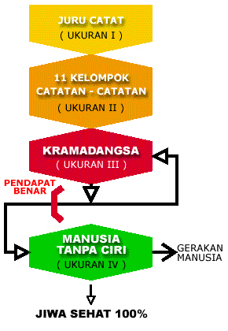

WEJANGAN-WEJANGAN KI AGENG SURYOMENTARAM
WEJANGAN-WEJANGAN KI AGENG SURYOMENTARAM
(Bagian pertama dan kedua dibawakan oleh Ki Pronowidigdo)
Adapun yang saya ceramahkan malam ini adalah llmu Jiwa Gambar Kramadangsa. Ilmu mengenai jiwa orang, dan jiwa adalah rasa. Rasa itu yang mendorong orang berbuat apa saja. Orang bertindak mencari air minum karena terdorong oleh rasa haus, bertindak mencari bantal untuk tidur karena terdorong oleh rasa kantuk dan seterusnya. Maka rasa itu menandai hidup orang. Kalau hanya ada badan saja tanpa rasa, disebut bangkai. Mempelajari tentang rasa adalah mempelajari tentang orang. Sedangkan kita sendiri pun orang. Jadi mempelajari tentang orang, dapat dikatakan mempelajari diri sendiri atau mengetahui diri sendiri (bhs. Jawa: pangawikan pribadi).
Diri sendiri yang manakah yang dipelajari? Ialah diri sendiri yang diberi dan memiliki nama khusus. Kalau namanya Krama, merasa aku si Krama, atau kalau namanya Suta, merasa aku si Suta. Rasa yang bergandengan dengan namanya itu, saya istilahkan "Kramadangsa". Kramadangsa ini yang menyahut bila namanya dipanggil orang. Rasa namanya sendiri atau Kramadangsa iniiah yang akan kita teliti. Penelitian itu tidak sukar apabila kita mau, karena rasa itu melekat pada diri kita setiap hari, hingga untuk menelitinya tidak perlu pergi jauh-jauh. Maka dalam mengikuti ceramah ini bila ada sebutan "Kramadangsa", gantilah dengan nama Anda masing-masing, untuk mencocokkan kebenaran uraian saya ini.
Kramadangsa ini menyatukan diri dengan segala rasa yang timbul dalam dirinya. Misalnya timbul rasa haus, Kramadangsa merasa "aku haus", atau yang haus adalah "aku". Jika timbul rasa kantuk, lapar, dirasakannya "aku ngantuk", "aku lapar" dan seterusnya. Kramadangsa inilah yang merasa beda dari semua orang lain di seluruh dunia. Tegasnya kecuali aku, orang lain diperlakukan sebagai "kamu".
Sekarang marilah kita mulai meneliti, bagaimana kelahiran dan perkembangan rasa Kramadangsa dalam diri kita masing-masing.
Ketika kita masih sebagai bayi, kita bertindak sebagai juru catat, yang mencatat segala hal yang berhubungan dengan diri kita. Misalkan sebagai bayi kita melihat sesuatu, mendengar sesuatu, menjilat dan merasakan sesuatu, sesuatu itu kita catat. Seperti saya melihat lampu ini, lantas saya mencatatnya.
Catatan lampu dan lampunya yang dicatat, adalah dua barang terpisah, yang tidak bersangkutan. Umpama lampu yang dicatat itu pecah, catatan lampu yang ada dalam diri saya, tidak turut pecah. Sebaliknya, bila saya tiba-tiba mati, catatan lampu yang ada dalam diri saya rusak, tapi lampu yang dicatat itu, tidak turut rusak.
Untuk melihat catatan-catatan itu harus memakai mata batin, tidak dapat memakai mata kepala. Seperti saya sekarang di Jakarta, dengan mata terpejam melalui mata batin, dapat melihat catatan rumah saya di Yogyakarta, jelas sekali.
Dengan perantara pancaindera, kita mencatat segala rupa penglihatan, suara, rasa dan sebagainya; yang berjuta-juta jumlahnya, tidak kunjung penuh. Maka isi catatan kita itu, lebih besar jumlahnya dari pada isi dunia. Karena rasa sendiri, yang tak ada di dunia luar, ada dalam catatan.
Pemisahan catatan dari hal yang dicatat sebagai berikut, misalnya saya berkata: "Kemarin saya minum air kelapa muda, segar rasanya." Pada waktu saya berkata itu, rasa segar sudah tidak ada, tapi saya dapat mengatakannya, karena melihat catatan rasa segar yang masih ada dalam ingatan saya.
Peranan kita sebagai juru catat ini, boleh dikatakan hidup dalam ukuran kesatu, seperti cara hidup tumbuh-tumbuhan. Pekerjaannya tidak lain hanya mencatat, dan bila berhenti mencatat, matilah juru catat itu. Hasil pekerjaan mencatat, ialah berupa bermacam-macam catatan yang berjuta-juta jumiahnya.
Catatan-catatan itu barang hidup, yang hidup dalam ukuran kedua, seperti kehidupan hewan. Maka sebagai barang hidup, catatan itu bila dapat makanan cukup, suburlah hidupnya, tapi bila kurang makanan ia menjadi kurus, kemudian mati. Makanan catatan-catatan itu berupa perhatian. Jika memperoleh perhatian besar, catatan-catatan itu hidup subur, tapi jika tidak dapat perhatian, catatan-catatan akan mati.
Sebagai contoh, kita kaum laki-laki, barangkali masih ingat bahwa di masa kanak-kanak kita suka bermain gundu, gasing, layang-layang dan sebagainya. Mengapa sekarang setelah dewasa kita tidak melakukannya lagi, padahal catatan permainan-permainan itu masih terdapat dalam ingatan kita? Karena catatan itu sudah lama tidak mendapat perhatian, sampai menjadi kurus dan akhirnya mati; maka sudah tidak menarik si Kramadangsa lagi.
Seperti halnya benda-benda hidup lain, catatan ini pun pada saat terakhir mengalami sekarat (ulmaut). Seperti lampu minyak yang habis minyaknya, pada saat terakhir menyala besar, lalu padam.
Tetapi kalau catatan masih hidup, ia masih menarik diri kita. Umpama catatan berjudi, yang masih hidup dalam ingatan saya, menggerakkan hati dan badan saya, ketika saya melihat orang-orang berjudi dalam suatu pesta. Walaupun mengalami kekalahan dan habis uang, saya telah bersumpah tidak akan berjudi lagi. Tetapi bila nanti memegang uang lagi dan melihat orang berjudi, saya segera mendekatinya untuk turut serta pula.
Jika catatan berjudi itu tidak diberi perhatian, ia akan menjadi kurus kemudian mati. Pada saat mendekati kematiannya, catatan itu mengalami sakarat (ulmaut), berwujud keinginan yang sangat besar untuk berjudi. Jika keinginan yang sangat besar ini pun tidak diperhatikan, matilah catatan itu.
Apabila catatan-catatan itu sudah cukup banyak jumiah dan jenisnya, barulah lahir rasa Kramadangsa. Yaitu rasa yang menyatukan diri dengan semua catatan-catatan, yang berjenis-jenis itu sebagai: harta-bendaku, keluargaku, bangsaku, golonganku, agamaku, ilmuku dan sebagainya. Rasa aku si Kramadangsa ini, bagaikan tali pengikat batang-batang lidi dari sebuah sapu lidi.
Kramadangsa ini pun barang hidup, yang hidup dalam ukuran ketiga, karena tindakannya dengan berpikir. Jadi Kramadangsa ini tukang pikir, memikirkan kebutuhan catatan-catatan di atas tadi.
Supaya jelas, di sini perlu saya ulangi mulai dari asal sampai terjadinya Kramadangsa.
Dimulai dari bayi yang baru lahir, sudah mencatat apa saja yang berhubungan dengan dirinya. Yang dari luar melalui pancaindra dan yang dari dalam melalui rasanya. Misalnya pada waktu lahir bayi itu diterangi dengan lampu, di waktu lampu padam, ia menangis. Disini bayi itu sudah membedakan terang dan gelap, hal itu telah tercatat dalam catatannya. Kemudian ia mencatat benda-benda di bawah cahaya terang. Ia pun mencatat rasa iapar yang timbul dalam dirinya dan rasa enak di waktu diberi air tetek ibunya.
Apabila bayi ini makin besar dan makin lengkap catatan-catatannya, ia pun dapat membedakan lelaki dan perempuan, dan mengenali mana ibunya dan yang bukan. Kemudian catatan-catatan itu menjadi dorongan bagi tindakan atau perbuatannya.
Kita orang dewasa pun bertindak atau berbuat terdorong oleh catatan. Misalnya di jalan kita melihat seorang wanita yang mirip dengan isteri kita. Kita tidak berani segera menegur, sebelum mencocokkan wanita itu dengan catatan isteri kita, yang ada dalam diri kita sendiri. Umpama bagian-bagian anggota badannya sama, tetapi rambut ubannya tidak sebanyak uban isteri kita, kita belum berani memanggil. Tetapi bila seluruh wujudnya sama dengan catatan kita, barulah kita bertindak menegur: "Isteriku, kamu hendak ke mana?"
Jadi dalam hal bayi tadi, apabila catatan-catatannya belum cukup dan belum lengkap, ia belum dapat membedakan benda-benda dan menghubungkan sebab dan akibat kejadian-kejadian, karena belum lahir rasa Kramadangsa. Oleh karenanya ia belum dapat memikir. Memikir ialah membedakan pohon waru dengan pohon pisang, menghubungkan sebab terjadinya gelas jatuh, yang mengakibatkan pecah. Setelah bayi itu agak besar, sebagai anak kecil, ia pun belum mengerti hal ruang dan waktu {zaman). Misalkan diperlihatkan bulan, ia berusaha memegangnya, dan bila diberi pakaian baru untuk dipakai pada hari raya, ia menangis minta segera dipakai sekarang juga.
Dapat dilihat lebih jelas lagi, bahwa rasa Kramadangsa anak tadi belum lahir, ialah tiap ia minta makan, ia tidak mengatakan: "Bu, aku minta makan," tetapi mengatakan namanya: "Bu, Din minta makan," misalkan nama anak itu si Din. Dan menyebut ibunya tidak sebagai "ibuku", tetapi sebagai "ibu si Din".
Bila anak itu sudah berusia tiga tahun ke atas, rasa Kramadangsanya sudah terbentuk, maka bila ia minta makan, dikatakannya "Bu, aku minta makan." la merasa, kecuali aku si Din, semua orang lain adalah bukan aku. Manakala ia melihat ibunya disandari oleh kakaknya, ia tidak membolehkannya. Karena ia merasa ibuku ialah milikku, bukan milik orang lain. Demikian seterusnya sehingga tua. banyak hal dan benda-benda dinyatakan sebagai miliknya.
Berjuta-juta catatan itu menggerombol, mendekati yang sama sifat coraknya dan menjauhi yang lain. Seperti ayam mendekati kalkun, menjauhi kambing.

Dalam gambar Kramadangsa di samping ini, ada sebelas kelompok catatan. Kesebelas kelompok catatan tersebut adalah:
Perhatikan juga bahwa dari ukuran ketiga (kramadangsa) hendak menuju ke ukuran keempat (manusia tanpa ciri), terdapat simpang tiga. Untuk menuju ke ukuran keempat terdapat penghalang yang berupa PENDAPAT BENAR, yaitu rasa benar sendiri.
Pembagian ini dibuat dengan sengaja oleh Ki Ageng Suryomentaram. Orang lain dapat saja membaginya menurut kehendak masing-masing, tidak terikat. Di luar kelompok-kelompok di atas, masih banyak lagi catatan-catatan yang khusus, misalkan ada barang-barang baru, kapal udara dan sebagainya yang tercatat dalam catatan.
Catatan itu hidup dalam ukuran kedua, sama dengan kehidupan binatang. Misalnya seekor anjing sedang menyusui anak-anaknya, tiba-tiba orang datang mengganggunya. Menggonggonglah anjing itu, siap untuk menggigit. Bila merasa menang ia mengejar, dan bila merasa kalah ia lari. Langkah demikian itu bagi semua anjing adalah sama.
Bagi manusia, bila anaknya diganggu orang, ia pun segera marah, karena anak itu termasuk catatan "keluargaku". Tapi tindakannya tidak seperti anjing, dipikirkan cara melaksanakan amarahnya. Yaitu catatan "keluargaku" memerintah tukang pikirnya, si Kramadangsa. Cara memikir Kramadangsa bagi setiap orang berbeda-beda, disebabkan berbeda-bedanya catatan pengalaman masing-masing orang. Sedangkan memikir adalah melihat catatan-catatan itu. Misalnya si Suta, mengetahui bahwa anaknya di sekolah diganggu oleh anak lain. Ia lantas marah dan setelah berpikir kemudian diambilnya keputusan untuk melaporkan pada guru sekolah. Tapi bila hal tersebut terjadi pada si Naya, lain pula tindakannya, mungkin ia akan mengadukan pada polisi, Dan lain lagi bagi si Waru, mungkin didamaikan dengan orang tua anak yang mengganggu. Buah pikiran mereka berlainan karena catatan-catatan pengalaman mereka pun berlainan.
Demikian perbedaan hidup manusia dari binatang, walaupun reaksi rasanya sama, tetapi tindakannya berlainan. Karena manusia punya tukang memikir yaitu Kramadangsa, yang bertindak menurut perintah catatan-catatannya.
Jadi Kramadangsa ini dapat dikatakan, sebagai seorang buruh yang mengabdi pada sebelas orang majikan, yang berwujud sebelas kelompok catatan tadi.